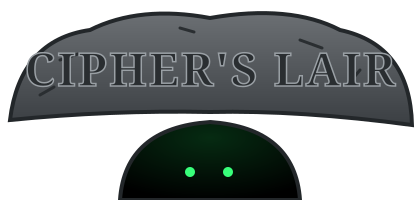
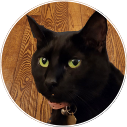

Meet Cipher, the hacker cat. Press the button and he launches 50 real attacks at this website: the OWASP Top 10 for web apps, the OWASP Top 10 for AI chatbots, and a few nasty tricks of his own. Watch Tucker's defenses stop them in real time, while the AI SOC Squirrel (a bounded AI security analyst) reads the logs and reports, just like a security operations center would.
Nothing here is simulated. Every attack is a real request against this live website, and every result you see is the real defense responding. If a defense ever fails, it shows up as "GOT THROUGH", the site owner is alerted, and your report says so.
All attacks are run server side, against the site itself, so no attack traffic ever leaves your network: you can't get in trouble with your company or be blocked by a security platform you may be running.
One run per visitor every 24 hours. Takes about 90 seconds.
Tucker's Defense
- tucker.status = "on patrol"

Cipher's Attack
- cipher.status = "plotting"
AI SOC Squirrel
- squirrel.status = "watching the logs"